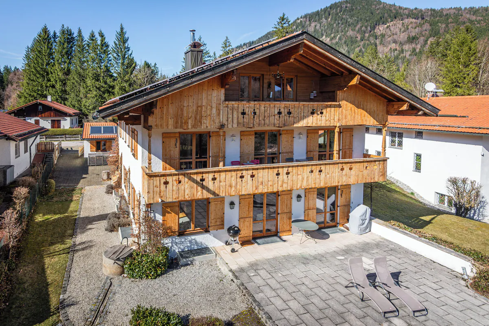
Schliersee, Fischbachau, Bayrischzell – drei Tage, fünf Freunde, eine Brennerei, ein Gipfel und viel zu viel Kuchen.
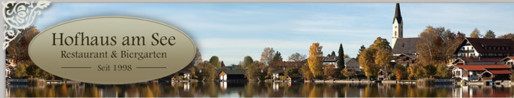
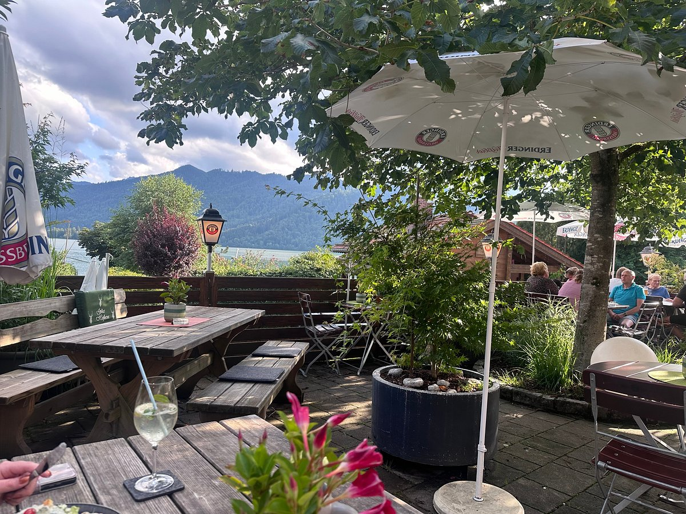
Am Donnerstag Abend im Hofhaus am See die ideale Einkehr nach der Anreise. Klein aber fein und urgemütlich. Prima Essen.
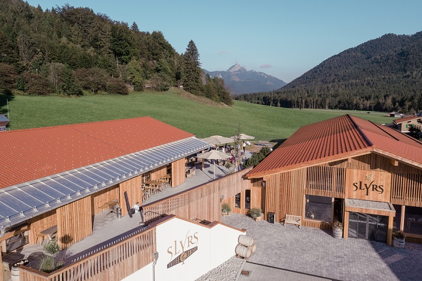
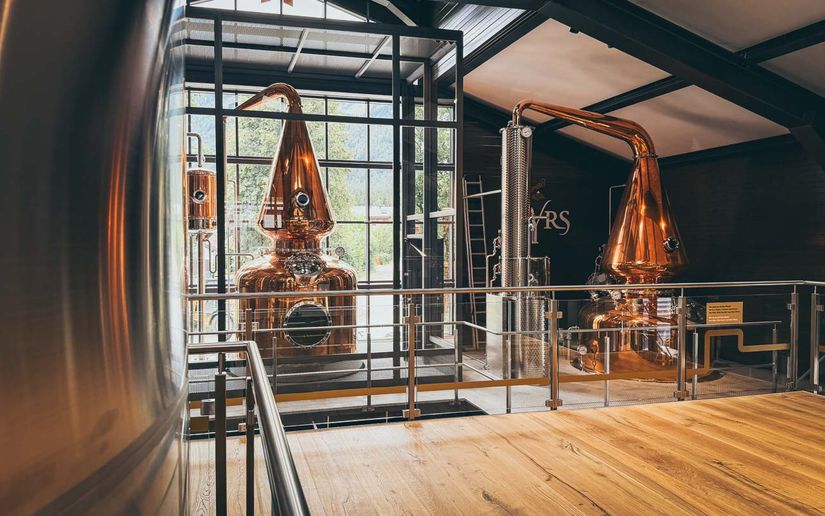
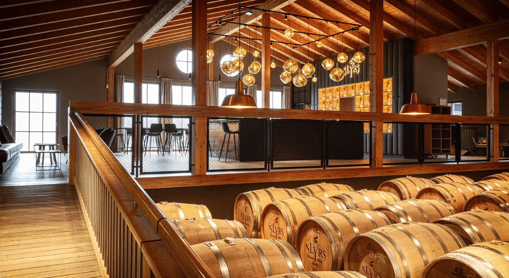
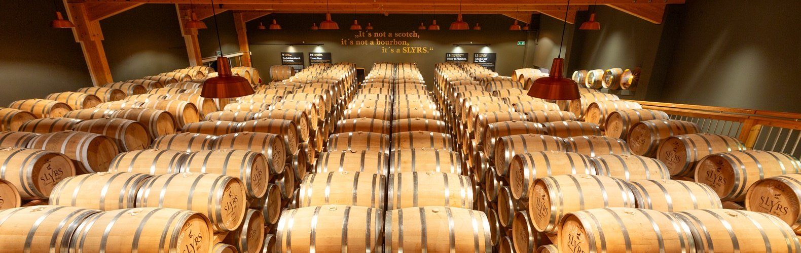
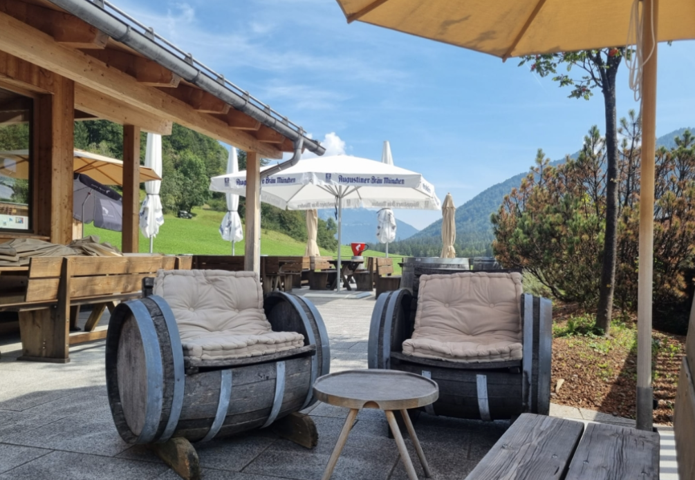
→ slyrs.de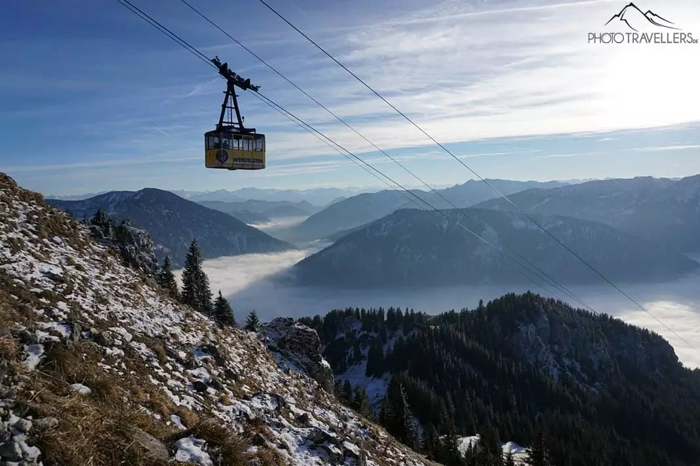
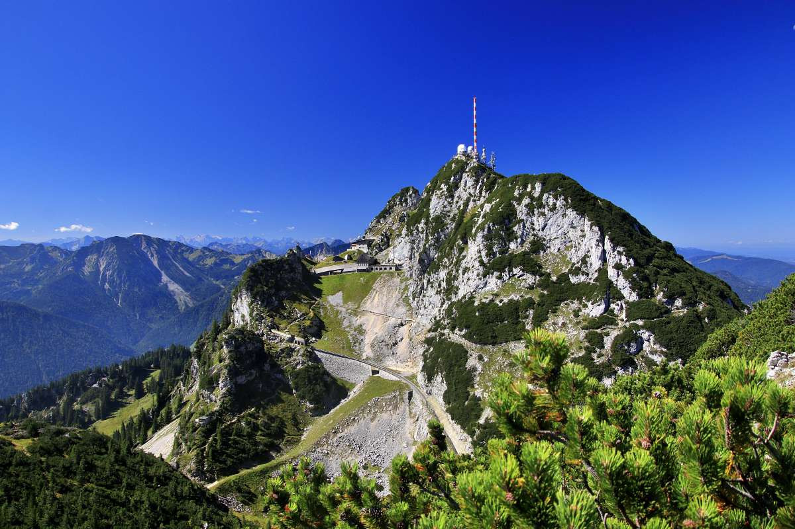
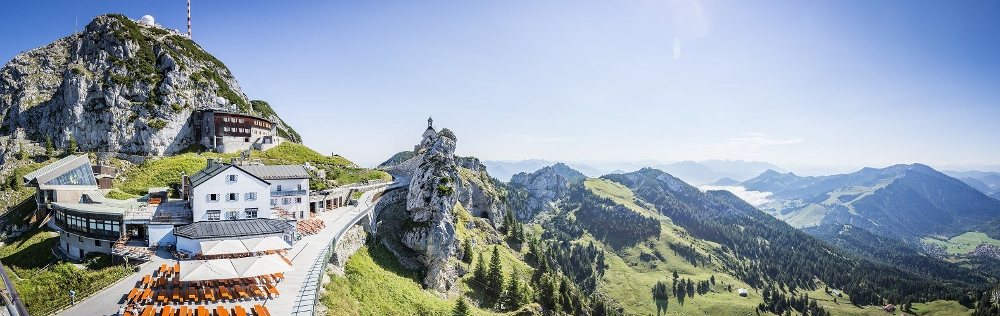
Per Seilbahn in 7 Minuten auf 1.724 m – mit bis zu 170 m Bodenabstand der absolute WOW-Moment. Deutschlands höchstgelegene Schauhöhle, Panoramaweg, Wendelsteinhaus.
Berg & Tal: 31 € / Person → wendelsteinbahn.de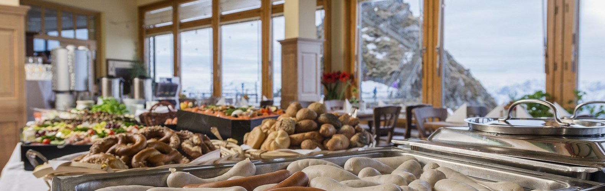
Brunchbuffet mit allem was dazugehört: Brotwaren, Wurst, Käse, Antipasti, warmer Hauptgang, Suppe, Dessert, Kaffee. Nächster Termin: 5. Juli.
Bergfahrt: 9:30 Uhr Zahnradbahn / 9:45 Uhr Seilbahn.
89 € inkl. Berg- und TalfahrtSeilbahn rauf, SLYRS-Fässer in der Wendelsteinhöhle besichtigen, dann Destillerie unten. Zwei Erlebnisse, ein Preis – ca. 10% günstiger als Einzeltickets.
Kombiticket: 39 € / Person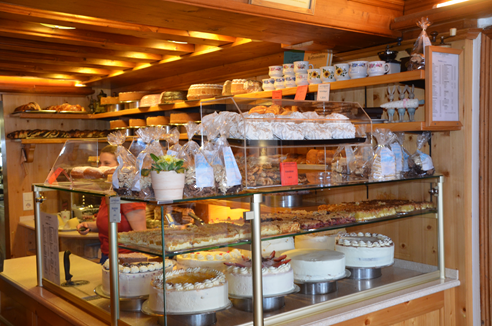
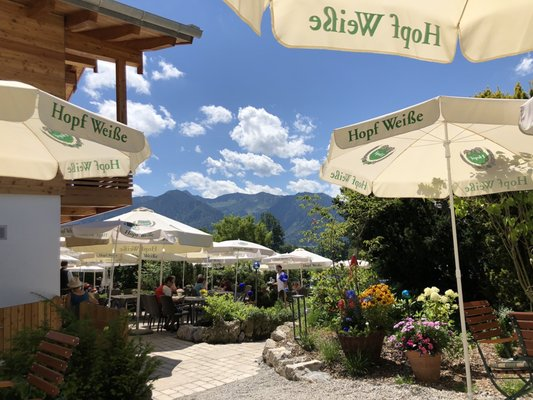
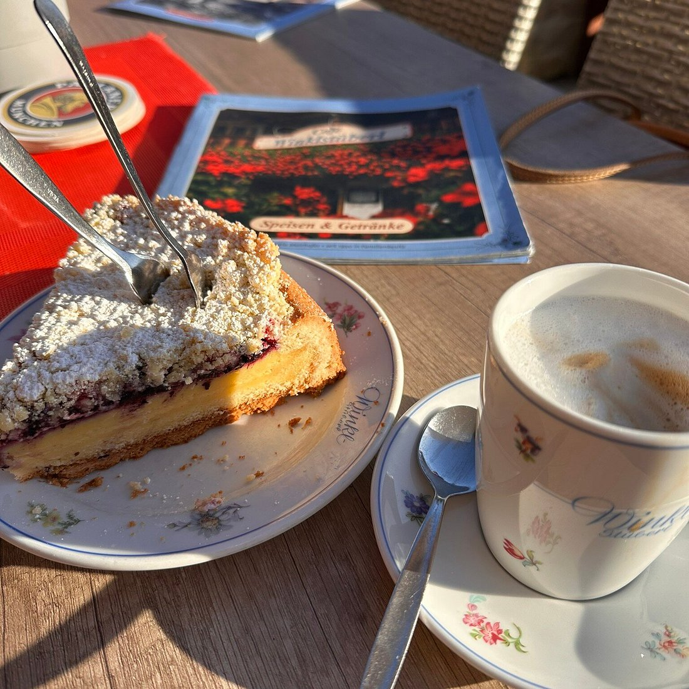
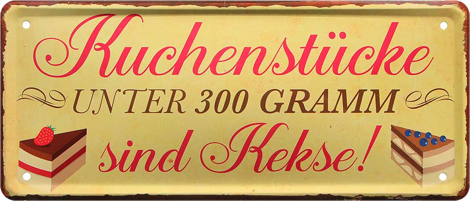
Einkehr im Wirtshaus Kirchstiegl in Hundham und/oder im Café Winklstüberl in Fischbachau. 39 km, 340 hm, ca. 3:15 h.
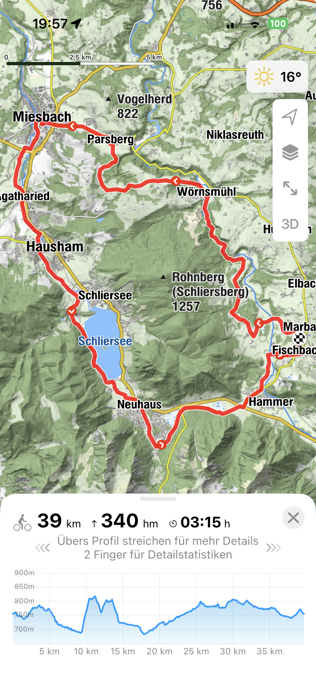
23 km, ca. 1,5 h bis zum Trockenbachtal, dann zu Fuß zur Alm (1 h). Oben: Kaiserschmarrn, Marillenschnapserl vom Wirt und – wenn Glück – Mankeis (bair. Murmeltiere).
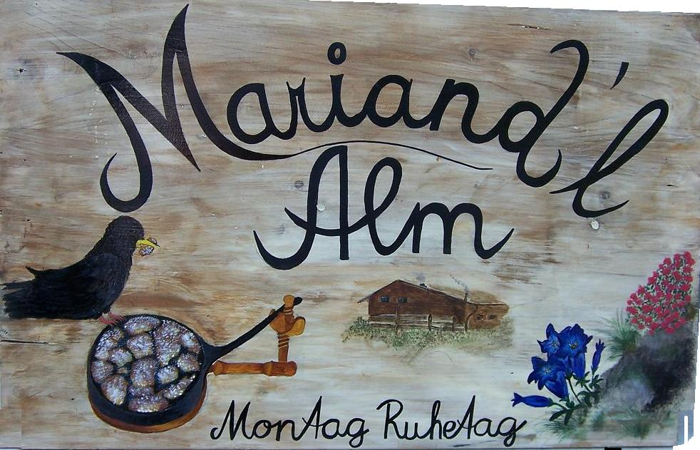
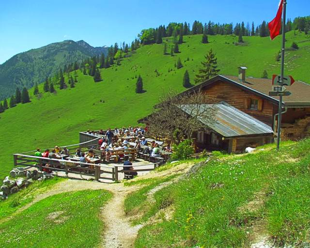
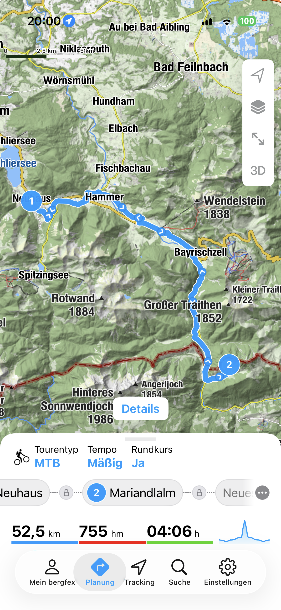
Überquerung Schliersee–Tegernsee. Am Ziel Berggasthof Neureuth mit Blick über den Tegernsee. Hin und zurück ca. 4,5 h zu Fuß.
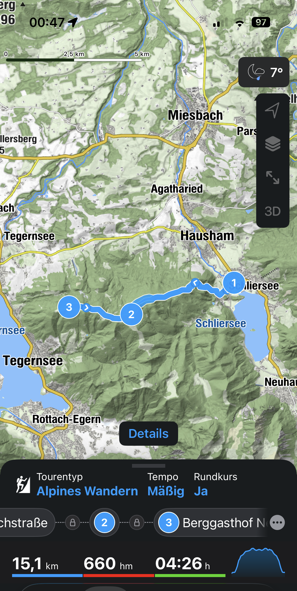
Es ist Sommer ☀️😎 – Verleihstation am Südufer. Nach einem Weißbier aufs Wasser.
Neuhaus, direkt am Südufer, fußläufig zum See, 3 Gehminuten zur Whisky-Brennerei. Bergblick, Sauna, Balkon. Stornierbar bis 18. Juni.
→ Inserat auf FeWo-direkt